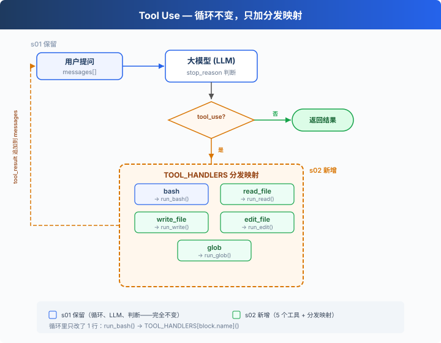

s02: Tool Use — 多加一个工具，只加一行
"加一个工具, 只加一个 handler" — 循环不用动, 新工具注册进 dispatch map 就行。 Harness 层: 工具分发 — 扩展模型能触达的边界。
On this page
s01 → s02 → s03 → s04 → ... → s20
"加一个工具, 只加一个 handler" — 循环不用动, 新工具注册进 dispatch map 就行。
Harness 层: 工具分发 — 扩展模型能触达的边界。
只有 bash 一个工具
s01 的 Agent 只有一个 bash 工具。读文件要 cat，写文件要 echo "..." > file.py，改文件要 sed。
模型想的是"读这个文件"，却要拼出 cat path/to/file。多了一层翻译，浪费 token，还容易拼错。
全局视角：工具分发

s01 的循环完全保留（LLM 调用、stop_reason 判断、消息追加）。唯一的变动在工具执行那 1 行：run_bash() 替换为 TOOL_HANDLERS[block.name]() 查表分发。
给 Agent 加一个工具只需要做两件事：
- 定义工具：在
TOOLS数组里加一条描述 - 注册处理函数：在
TOOL_HANDLERS字典里加一个映射
从 1 个工具到 5 个工具
s01 只有一个 bash：
TOOLS = [{"name": "bash", ...}]
def run_bash(command): ...
s02 加到 5 个，每个工具都是独立定义：
TOOLS = [
{"name": "bash", "description": "Run a shell command.", ...},
{"name": "read_file", "description": "Read file contents.", ...},
{"name": "write_file", "description": "Write content to file.", ...},
{"name": "edit_file", "description": "Replace text in file once.", ...},
{"name": "glob", "description": "Find files by pattern.", ...},
]
每个工具有自己的实现函数：
def run_read(path, limit=None):
lines = safe_path(path).read_text().splitlines()
if limit:
lines = lines[:limit]
return "\n".join(lines)
def run_write(path, content):
safe_path(path).write_text(content)
return f"Wrote {len(content)} bytes to {path}"
def run_edit(path, old_text, new_text):
text = safe_path(path).read_text()
if old_text not in text:
return "Error: text not found"
safe_path(path).write_text(text.replace(old_text, new_text, 1))
return f"Edited {path}"
def run_glob(pattern):
import glob as g
return "\n".join(g.glob(pattern, root_dir=WORKDIR))
工具分发
TOOL_HANDLERS = {
"bash": run_bash,
"read_file": run_read,
"write_file": run_write,
"edit_file": run_edit,
"glob": run_glob,
}
# 循环里只改了一行——从硬编码 run_bash 变成查表：
for block in response.content:
if block.type == "tool_use":
handler = TOOL_HANDLERS[block.name] # 查表
output = handler(**block.input) # 调用
results.append(...)
加一个工具 = 在 TOOLS 数组加一条 + 在 TOOL_HANDLERS 字典加一行。循环不变。
多个工具调用
模型经常一次返回多个 tool_use："读一下 a.py 和 b.py，然后列出所有 .py 文件"。
教学版按 response.content 原始顺序逐个执行。CC 的做法更复杂：按原始顺序切成连续 batch，batch 内并发安全的工具并行执行，batch 间严格顺序（见附录）。
速查
| 概念 | 一句话 |
|---|---|
| TOOL_HANDLERS | 工具名 → 处理函数的字典。加工具 = 加一行映射 |
| 工具定义 | 告诉模型"我能做什么"的 JSON schema |
| 多工具调用 | 模型可一次返回多个 tool_use，教学版按原始顺序逐个执行 |
| 循环不变 | s01 的 while True 循环一行都没改 |
相对 s01 的变更
| 组件 | 之前 (s01) | 之后 (s02) |
|---|---|---|
| 工具数量 | 1 (bash) | 5 (+read, write, edit, glob) |
| 工具执行 | 硬编码 run_bash() |
TOOL_HANDLERS 查表分发 |
| 路径安全 | 无 | safe_path 校验（仅 file tools） |
| 循环 | while True + stop_reason |
与 s01 完全一致 |
试一下
cd learn-claude-code
python s02_tool_use/code.py
试试这些 prompt：
Read the file README.md and tell me what this project is aboutCreate a file called test.py that prints "hello", then read it backFind all Python files in this directoryRead both README.md and requirements.txt, then create a summary file
观察重点：模型什么时候只调一个工具，什么时候一次调多个？多个工具调用的顺序和结果是否正确？
接下来
现在 Agent 有 5 个专用工具。file tools 受 safe_path 保护，但 bash 不受限制，rm -rf / 还是能跑。
s03 Permission → 在工具执行之前加一道门：这个操作安全吗？需要用户批准吗？
深入 CC 源码
> 以下基于 CC 源码 `Tool.ts`、`tools.ts`、`toolOrchestration.ts`、`toolExecution.ts`、`StreamingToolExecutor.ts` 的核查。 ### 一、工具定义方式 **教学版**：`TOOLS` 数组 + `TOOL_HANDLERS` 字典。定义和实现分开。 **CC**：每个工具是 `buildTool()` 创建的独立对象，包含 schema、验证、权限、执行。`getAllBaseTools()` 汇总所有工具。 教学版的分离方式对教学更清晰——读者一眼看到"加一个工具 = 两条定义"。 ### 二、并发安全判断：isConcurrencySafe()  教学版按原始顺序逐个执行，不做并发。CC 用 `isConcurrencySafe(input)` 判断能否并发——注意这不是简单的"只读 vs 写"，而是按具体输入判断： | | isReadOnly | isConcurrencySafe | |---|---|---| | FileRead | true | true | | Glob | true | true | | Bash `ls` | true | **true** ← 关键差异 | | Bash `rm` | false | false | | TaskCreate | false | **true** ← 改状态但可并发（TaskCreate 在 s12 介绍） | CC 的 Bash tool 的 `isConcurrencySafe` 等于 `isReadOnly`——只读命令可并发，写命令不可。TaskCreate 虽然改了任务文件，但每次都写不同的文件，所以可以并发。 ### 三、分区算法 CC 的 `partitionToolCalls()`（`toolOrchestration.ts:91-115`）不是分两组，而是把工具调用**按连续块分批**：[read A, read B, glob *.py, bash "rm x", read C]
→ batch1(并发): [read A, read B, glob *.py]
→ batch2(串行): [bash "rm x"]
→ batch3(并发): [read C]